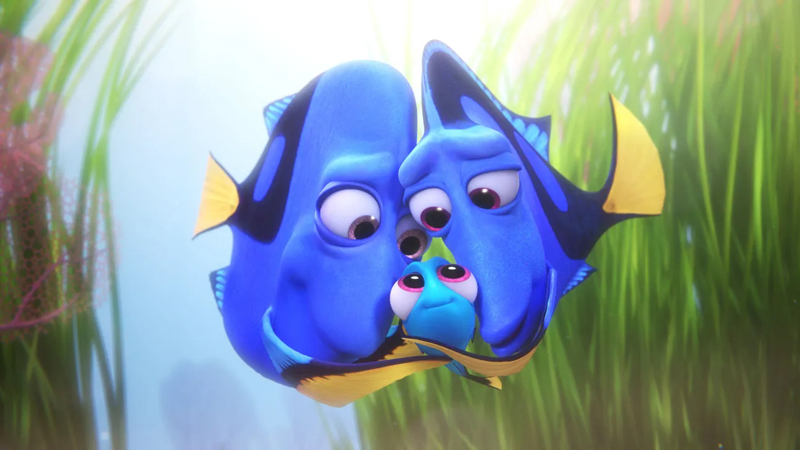

About Dory
Dory is a forgetful yet super-friendly blue tang who always sees the bright side. She makes friends in a flash and uses her cleverness to tackle any obstacle. With her big heart and boundless optimism, Dory shows us that friendship and perseverance can conquer just about anything.
Dory and her family
Dory's Characteristics
- Forgetful: Despite her short-term memory challenges, she remains endearing.
- Friendly: Dory makes friends effortlessly, showcasing her approachable nature.
- Optimistic: She always looks on the bright side, no matter the challenge.
- Clever: Dory uses her quick wit to overcome obstacles.
- Loyal: Her big heart and generosity make her incredibly dependable.
Dory Friends
Dory's journey is enriched by a loving circle of friends and family. Each one brings a unique spark that helps her navigate life's adventures with heart and humor. Click on the link below to read more about them
- Jenny & Charlie: Dory's loving parents who embody warmth and family support.
- Marlin: A caring clownfish who guides Dory on her adventures.
- Nemo: A brave, curious clownfish whose friendship brings heart to their journey.
- Destiny: A gentle whale shark whose calm presence offers guidanc
- Hank: A resourceful septopus with a tough exterior and a loyal heart.